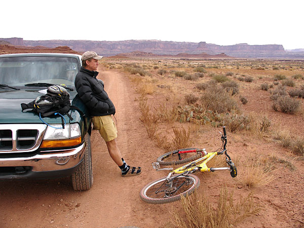

|
3 Days on the White Rim Trail
The freak has been scheming to ride his BMW f650 from Salt Lake,
around the White Rim trail and back. But would it be possible?
He decided the best way to scope it out would be to ride
it first on a self powered bike backed up by a
fully overloaded support vehicle. There was more
food, wet wipes and diapers than we could ever hope to consume
in three days, but hey, that's life on the edge of the white
rim.
Day One: Supa Slovenka overlooks the Colorado
River.
Don't trip as you finesse your way across mussleman arch.
Here are the four lost bikers that
followed us to camp in search of water and hydrogenated power snacks.
I've seen the desert and the damage
done. The open road reflected on the bumper of the sag
wagon.

Here's our dedicated driver after a
hard morning of "driving
the shit outta that truck!" (actual quote from previous
trip). Supa Slovenka stares
menancingly from within.
This seemed liked the perfect spot to take
a pict of my totally bad ass machine of a mountain bike.
Piki Peek a Boo
This guy passed through our camp on his trek across america. He hopes
to be the first to carry a 20 gallon tupperware from coast to coast.
Good luck Rubbermade Man!
Sunset of day 2. A touching moment before
the kitchen zar forced us to eat pesto
pasta with fresh pine nuts, parmesan, wine and a side of creamy
tomato minestra. The rigors of camping aren't for everyone.
What's tha Matta with you?.. Our camp on
Murphy's hog back. Someone drank too much and walked off a
60 ft cliff here a week earlier. After checking out a tent
site right on the edge of the cilff, I opted for one a little further
inland.
On the morning of our last day I woke
up really having to go to the bathroom. Then I saw this amazing
orange light and grabbed my camera. I managed to only take two
shots before the warm glow completely dissappeared.
Some pictures, no matter what you do,
are just going to turn out well.
Here's the whole Famn Damily, minus our
dedicated driver. Piki shown in full camelback suction mode.
The White Rim locals are waaaay tough.
Whatever you do, don't look them in the eye...
Well, the white rim 2005 ride was a total
success. So successful that, unfortunately, there aren't any
epic stories to tell. It's enough to make you want to go and
ride all 100 miles in one day so you have something to report.
Or, if you're really dying for a good story, feel free to borrow
one of my roomates motorcycles and ride it across mussleman arch.
I dare you. Extra points for riding a wheelie.
As for riding the Beemer on the trail? It would
be a fun way to travel the area, camp and spend more time hiking
and running the trails. Some of the sand traps would be tricky
with a 400 lb. bike so a little training on the dunes of
the little sahara state park are in order. But that will have to
wait. It's going to be ski season any second now...
|